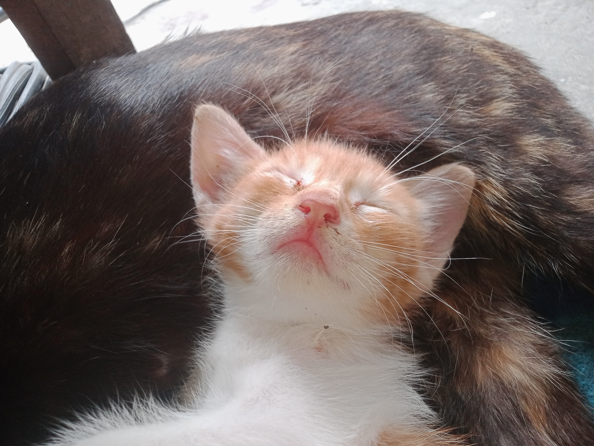
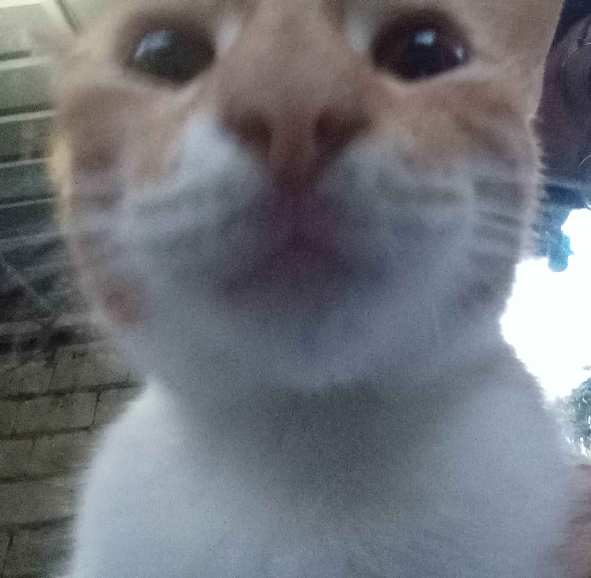
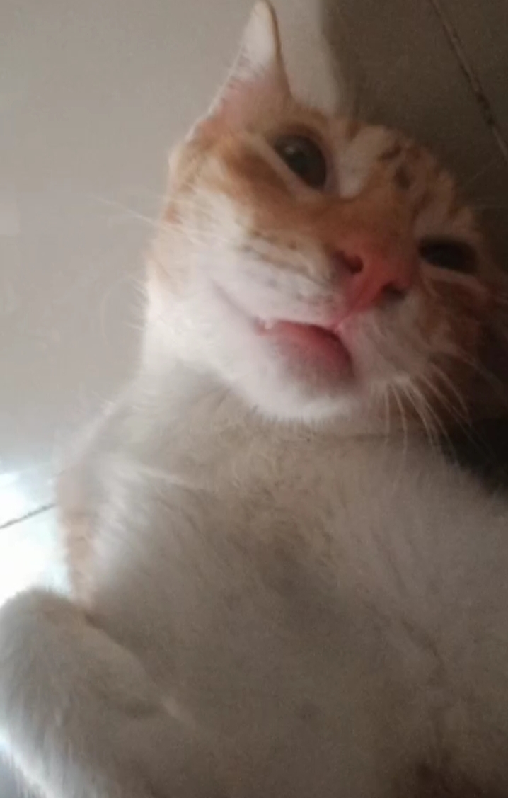
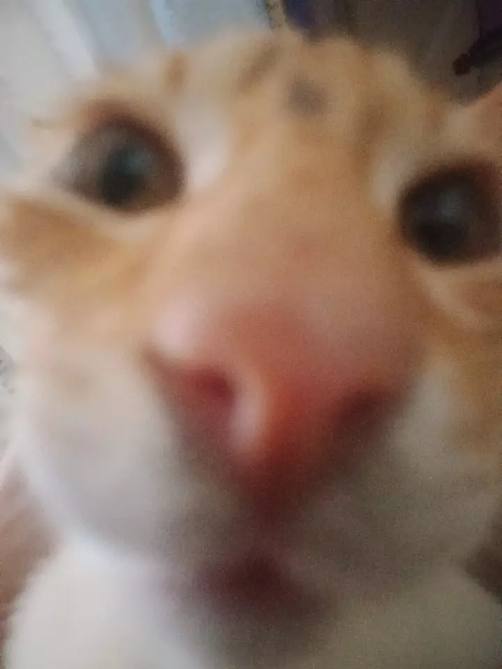
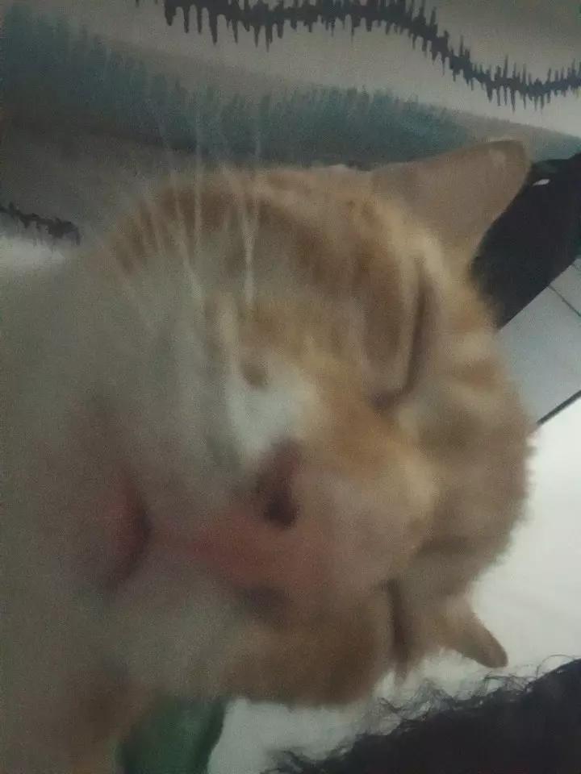

|

|
so here is pepe when he is kitten
he's so adorable and coochie coochieee:)
when pepe is young he suffer alot so here is the
story... pepe's dad is mad to 'negra' my black cat
and his dad always come to our house late at night and make trouble
pepe has 2 siblings and that 2 is now gone, i think it is because of their dad
last time pepe's dad make trouble, pepe got hurt so bad and he is losing
so much blood because nahulog siya sa hagdan.
|
but even though he suffer alot, he is doing fine now
he is also pasaway like his mother— the three of them always
in our kitchen robbing our food
|
|
pepe like to sleep he is always eepy
he don't have like or hate food because
he like to eat, md he is a house carrr !!!
he barely go outside i think it is because
there are people he doen't know outside that's
why he is always at home.
|

|
PEPE TOP 3 PHOTOS
 acoochie pepe
|
cotie pepe 
|
 eepy pepe
|
|